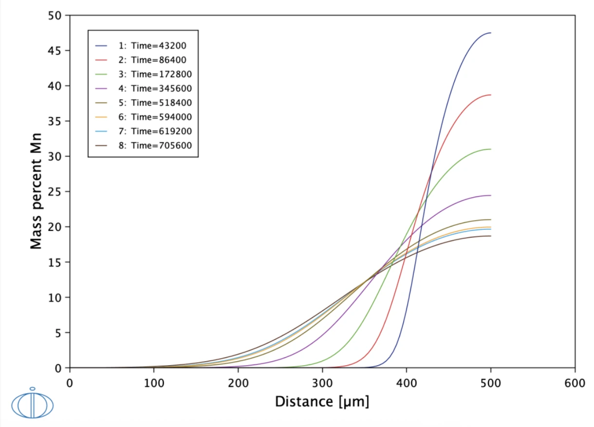
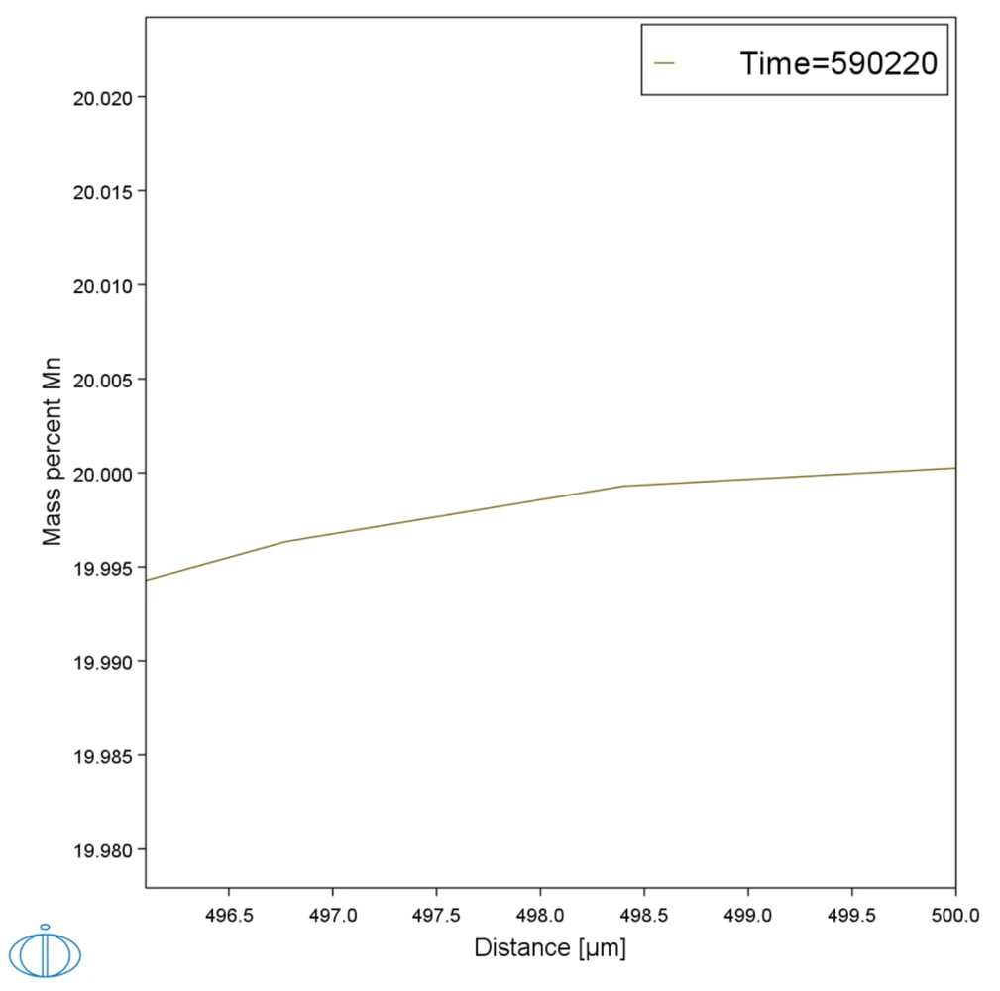

Academic team project
Diffusion Simulation in Iron-Based Alloys
Estimating the high-temperature holding time needed to dilute a manganese-rich inclusion in an iron-based alloy.
- Software
- Thermo-Calc
- Period
- March to July 2025
Introduction
The exercise asked how long manganese (Mn) would take to spread from a manganese-rich inclusion into the surrounding iron (Fe) matrix at 1,230 °C. The target was to bring the maximum local concentration close to 20% by mass.
Method
Phase selection
I used equilibrium calculations with my team to identify the face-centred cubic matrix for the diffusion model.
Diffusion model
We represented a 35 µm manganese-rich region in a 500 µm planar domain with closed boundaries, then compared concentration profiles at different holding times.
My contribution
I shared the Thermo-Calc setup, curve interpretation and preparation of the report with my teammates.


Results
The concentration profile after 590,220 seconds (about 164 hours) at 1,230 °C shows that the maximum local manganese concentration approached 20% by mass.
At the reported time, the highest calculated concentration was still marginally above the target. The estimate applies to the assumed geometry, temperature and closed boundaries.

